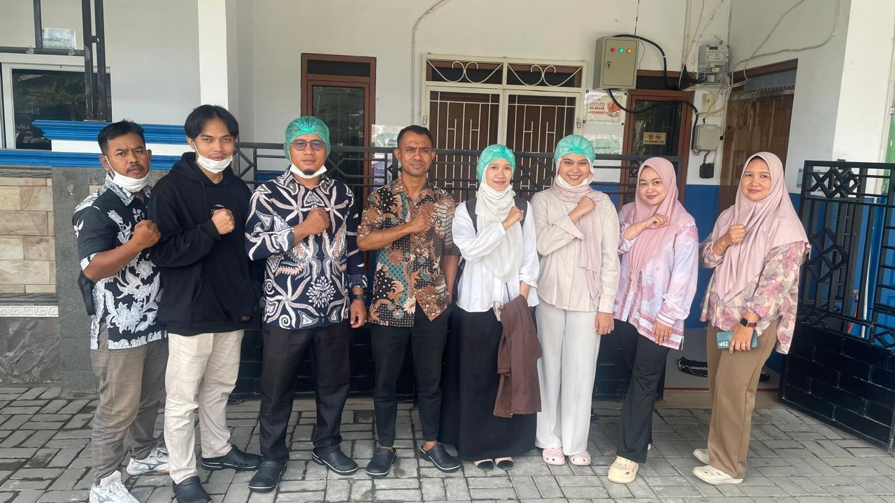

Juli 2026 — November 2026
Nutrition Supervisor
SPPG Tangerang Balaraja Tobat 5 · Tangerang, Indonesia
- Menyusun menu harian dan mingguan sesuai pedoman Program MBG dan kebutuhan gizi kelompok sasaran.
- Menghitung kebutuhan gizi serta menentukan standar porsi dan komposisi makanan yang sesuai.
- Memantau proses pengolahan, pemorsian, dan distribusi untuk mendukung kualitas gizi dan keamanan pangan.
- Mendukung penerapan prosedur higiene, sanitasi, dan keamanan pangan di operasional dapur.
- Memberikan arahan terkait gizi kepada tim pengolahan, pemorsian, dan distribusi.
- Memantau pelaksanaan menu dan penerimaan makanan serta berkontribusi dalam evaluasi dan rekomendasi perbaikan.

Dokumentasi Balarajaassets/images/kerja-balaraja.jpg